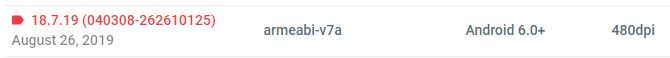
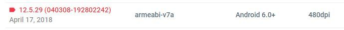

Google Play Services is a background service that runs on Android, which in turn helps in integrating Google’s advanced functionalities to other applications. It is essentially an Application programming interface (API) for developers to enhance communication between apps. It is a bundle of a bunch of other services that aid a user.
NOTE:
Anroid 9 can't spoof unless you root or dowgrade the OS (if applicable).
Follow the steps below carefully.
STEPS:
Go to Settings> Security> Device Admins/ Device Administrators and turn off Find My Device.
If you can't find device admin, search for it with the search bar.
Try Settings> Security> Other Security Settings> Device admin apps.
Go to Settings> Apps and find Google Play Services.
Go to Storage and clear Cache and Data.
Download and install your fakegps app.
Before downgrading Google play services, take note of the version installed first, this info will be helpful when looking for the right version later.
Go to Settings> Apps> Google Play Services.
Example:

Google Play Services 18.7.19 (040308-262610125). The numbers in bold-red is what we need! It could also be indicated as "948" for older versions.
Uninstall Google Play Services updates (3dots upper right> then check again the version.
If Google Services is below 12.5.29, then you can update it.
Download and install Google Play Services APK file.
NOTE: Spoofable versions of Google Play Services: 12.5.29, 12.6.85, 12.6.87 and 12.6.88.
So if i want to try 12.5.29..... i would look for the one with "040308". See pic below...

Clear cache and data of Google Maps.
Uninstall or disable Maps. (optional)
Disable auto updates in the Google Play Store.
Google Play Store> Settings> Auto-update apps> Set to Don't auto-update apps.